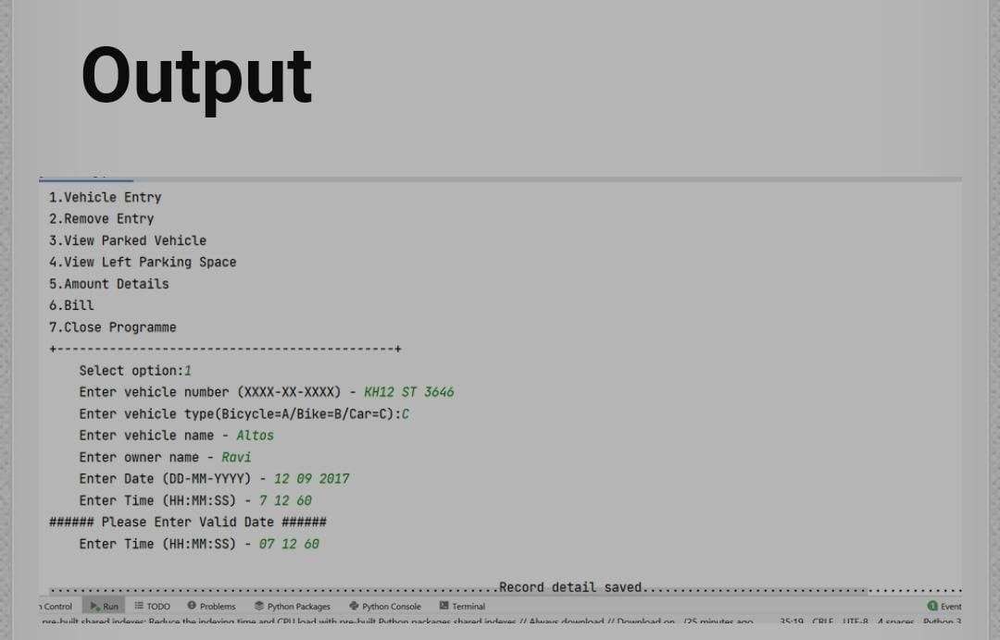
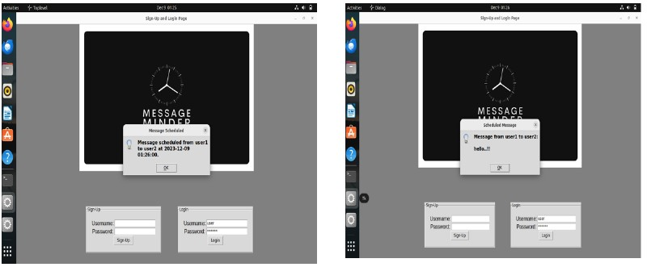
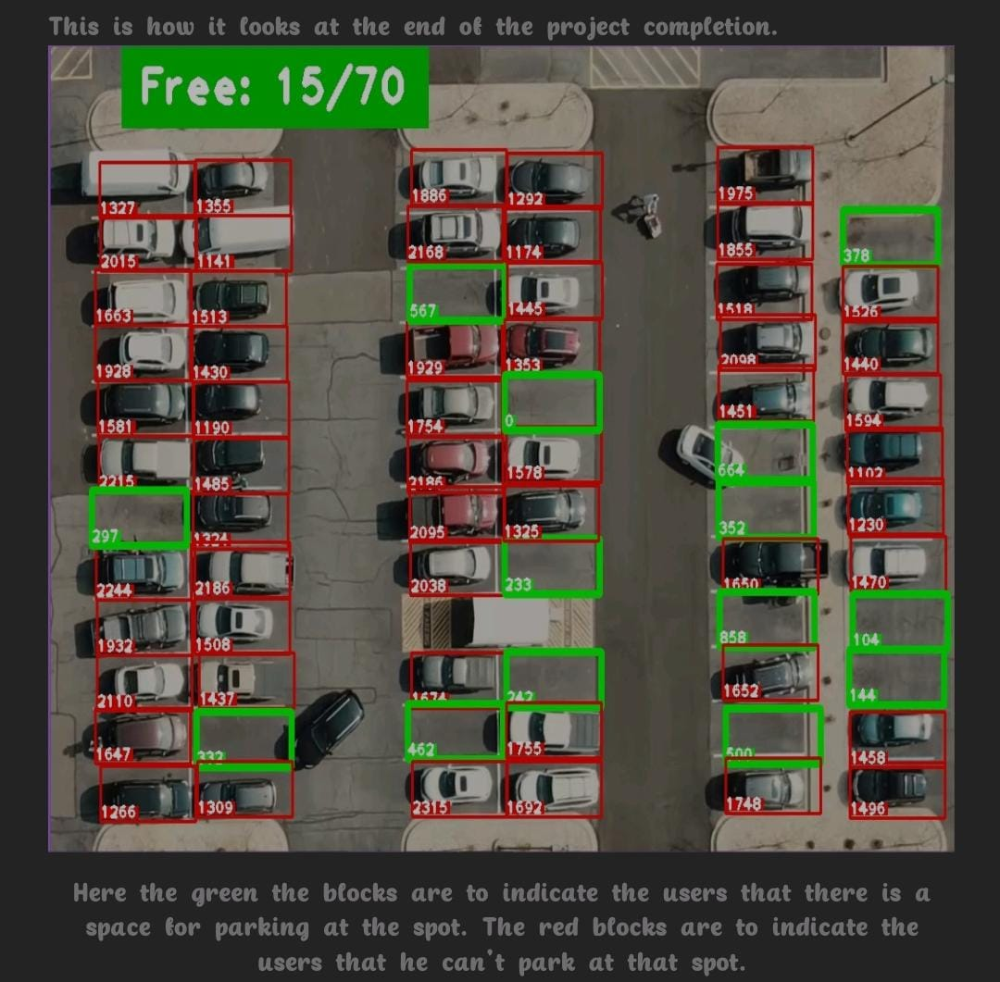

Welcome to my Innovative corner!
Vehicle Parking Management created using Python. This project helps maintain the details of the vehicle owner, number, type, date, and the amount of time the vehicle is parked in the area. Accordingly, the bill generates for the particular vehicle parked in the area. This information is useful for all those who want to maintain a database of the individual who has parked their vehicles in the surroundings.
Message Minder is an efficient application that allows users to send messages at specific times. It provides a convenient way to schedule and automate communication. With this application, users can save time and ensure timely delivery of messages. This application is developed using python, SQL and TKINTER.
AutoSpot is an intelligent parking space detection system designed to revolutionize the parking experience in busy environments like malls. Leveraging advanced image processing and machine learning algorithms, the proposed system employs strategically placed cameras to capture and analyze real-time images, detecting vehicles and identifying vacantparking spots. The user-friendly interface can be used to represent the parking lot's status, with color- coded indicators for each space.
